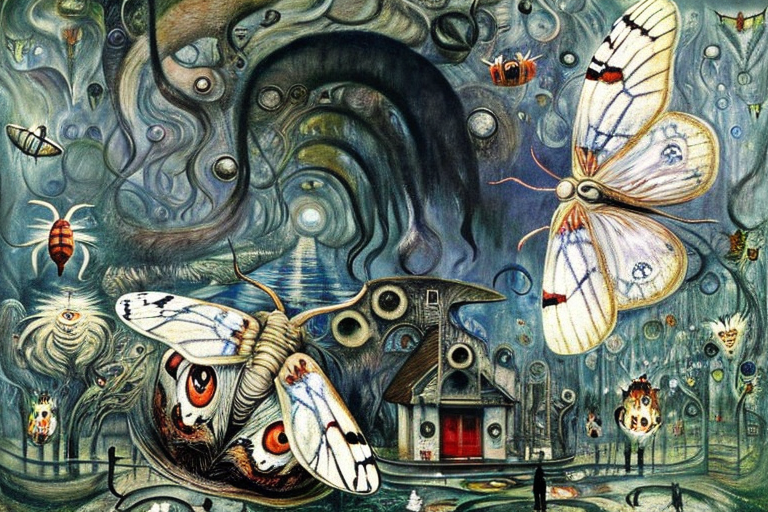

The Riverside bank and the static electricity loans
HOME
Table of Contents
The risks of innovation

In the small town of Riverside, nestled between rolling hills and a winding river, sat a bank like any other. It was unremarkable in many ways, with plain white walls and a simple sign above the entrance that read “Riverside Bank.” But inside, something extraordinary was happening.
The bank had found a way to increase its balance sheet by issuing loans to static electricity companies. These were businesses that specialized in harvesting the valuable static electricity that clung to clothing and other materials. It was a risky venture, to be sure, but the potential rewards were enormous.
The bankers at Riverside Bank knew they were onto something big. They poured over spreadsheets and financial projections, mapping out the path to success. They knew that if they could secure enough loans to these static electricity companies, they would be able to reap the rewards for years to come.
Meanwhile, the static electricity companies themselves were thriving. They had discovered a way to collect the static electricity that accumulated on clothing as people went about their daily lives. They would use specialized equipment to capture the charge and store it in large batteries, which they could then sell to power companies for a handsome profit.
The banks loaned out millions of dollars to these static electricity companies, each one eager to get in on the ground floor of this new industry. But not everyone was convinced that this was a wise investment.
One man, in particular, had his doubts. His name was John, and he was a local businessman who had seen his fair share of booms and busts. He knew that investing in new technologies was always a gamble, and he wasn’t sure that static electricity was any different.
But the bankers at Riverside Bank were convinced they knew what they were doing. They had done their research and crunched the numbers, and they were certain that they were on the brink of something big. And for a time, it seemed like they were right. The static electricity companies continued to grow, and the bank’s balance sheet swelled with each passing quarter.
The failure of investment
As the summer months approached, the bankers at Riverside Bank began to notice something troubling. The static electricity companies they had loaned so much money to were seeing a serious decrease in their profits. It was a trend that had been building for several years, but it was only now that they were starting to take notice.
It wasn’t hard to figure out what was going on. With the warmer weather, people were shedding their heavy clothing and wearing lighter, more breathable fabrics. There was simply less material for the static electricity to cling to, and as a result, the companies that relied on it were suffering.
The bankers at Riverside Bank watched with growing concern as their investments began to dwindle. They had been so sure that static electricity was the next big thing, but now it seemed like their gamble had backfired. They were losing money hand over fist, and there didn’t seem to be anything they could do to stop it.
The board at the bank held emergency meetings to discuss what to do next. They had to find a way to stem the bleeding, but they weren’t sure where to turn. They had already sunk so much money into the static electricity companies, and there didn’t seem to be any other viable options.
As the losses piled up, tensions began to run high among the bankers. They had staked their reputations and their careers on this gamble, and now it seemed like they were going to lose everything. They started to turn on each other, blaming one another for the situation they found themselves in.
It wasn’t long before the news got out. Rumors began to spread about the failing investments at Riverside Bank, and people started to pull their money out. The once-steady flow of deposits began to slow to a trickle, and the bank found itself in a precarious position.
The bankers tried everything they could think of to reverse their fortunes. They poured more money into the static electricity companies, hoping that they could weather the summer slump and rebound in the fall. They even considered taking out more loans themselves, in an attempt to recoup some of their losses.
But it was all for naught. The summer came and went, and the static electricity companies never recovered. The bankers at Riverside Bank were left holding the bag, their once-profitable investments reduced to nothing.
The catastrophic mistake

As the bankers at Riverside Bank tried to come to terms with their losses, they knew that they had to start collecting on the collateral that they had secured against the loans they had made. It was a bitter pill to swallow, but they knew that they had to do it if they wanted to have any hope of recouping some of their money.
So they dispatched teams of collectors to the static electricity companies to start gathering up the clothes and fabrics that had been used as collateral. But what they found when they arrived was not what they were expecting.
The clothes and fabrics that they had accepted as collateral were in a sorry state. They were dirty, stained, and moth-eaten, evidence of the hard use that they had been put to in the service of generating static electricity. The bankers could hardly believe that they had accepted such shoddy items as collateral for their loans.
But there was no turning back now. They had to collect what they could and hope that they could sell it for enough to cover at least some of their losses. So they set to work, gathering up armfuls of dirty, stained fabric and stuffing them into bags and boxes.
The collectors were disgusted by what they found. Some of the fabrics were so filthy that they had to wear gloves just to handle them. Others were so moth-eaten that they practically disintegrated in their hands. It was a far cry from the pristine, high-quality fabrics that they had imagined they were collecting when they accepted them as collateral.
But they soldiered on, determined to do what they could to salvage the situation. They loaded up trucks and vans with the dirty, moth-eaten fabric and hauled it back to the bank, where they sorted it and tried to determine what, if anything, they could salvage.
It was a depressing scene. The once-valuable fabrics were now little more than worthless rags, covered in dirt, stains, and moth holes. But the bankers at Riverside Bank were nothing if not determined, and they set to work trying to find a way to sell what they could and recover at least some of their losses.
Shaping banking policy
The government had no choice but to step in and bail out the Riverside Bank. It was a massive embarrassment for the banking industry, and it left many people wondering how such a situation could have arisen in the first place.
But as the government officials looked into the situation, they quickly realized that there was a major difference in the quality of the collateral that had been accepted by Riverside Bank. While some banks only accepted land as collateral, Riverside Bank had accepted clothing and fabrics, which were far less valuable and far more susceptible to wear and tear.
This difference in collateral quality was a major contributing factor to the bank’s downfall. Land was a stable and reliable asset, and it could be sold or developed if necessary to recoup losses. Clothing and fabrics, on the other hand, were much less reliable and much more subject to damage and decay.
The government officials knew that they had to take action to prevent this kind of situation from happening again. They made it clear that banks should only accept land as collateral, and that any bank that deviated from this policy would not be eligible for government assistance in the future.
The upheaval of practice

Banks across the country began to reassess their lending practices and their collateral policies, determined not to make the same mistake that had brought Riverside Bank to its knees. The Riverside Bank had learned its lesson the hard way. It had accepted low-quality collateral in the form of clothing and fabrics, and it had paid the price when those assets had deteriorated and become almost worthless. From now on, the bank made a decision to only accept land as collateral.
This decision was based on a number of factors, the most significant of which was the fact that land was a stable and reliable asset that would hold its value over time. It may fluctuate in price depending on market conditions, but it will always have value as a physical asset that can be developed or sold. Unlike technology, which could quickly become outdated and lose value, land was a tangible asset that could always be used for something.
This was a major shift from the past, when banks had been more willing to accept technology, such as clothing, computer programs, and even DNA genes, as collateral for loans. Τechnology loses value over time, often rapidly and unpredictably. Clothing goes out of style, computer programs become outdated, and DNA genes lose their relevance as medical science advances. While technology might seem like a good bet in the short term, it was a risky investment in the long term. This meant that technology was constantly losing value over time, as newer and better versions were developed and older versions became obsolete.
The problem with technology was that it was subject to constant change and innovation. Newer and better versions of products and services were being developed all the time, and it was difficult to predict which ones would succeed and which ones would fail. As a result, banks that accepted technology as collateral were taking a significant risk, and there was no guarantee that they would be able to recoup their losses if something went wrong.
In the end, the lesson that Riverside had learned was a valuable one. It had learned that not all assets were created equal, and that some were more reliable and valuable than others. By making the decision to only accept land as collateral, the bank had ensured that it would be able to make responsible investments that would benefit both its customers and its bottom line.